แผนที่ทั้งโปรเจกต์
ตามจาก React ผ่าน WebSocket ไปยังห้า handlers, storage และ live events กล่องระบุชื่อไฟล์จริงเพื่อเปิดอ่านต่อ
00-project-map.mmdขอบเขตของ StudyGroup
นักศึกษาใช้งาน StudyGroup และระบบเชื่อม Anthropic เมื่อขอสรุปกลุ่ม
01-c4-context.mmdส่วนที่รันและที่เก็บข้อมูล
React อยู่ใน browser; Python เสิร์ฟ HTTP และ WebSocket; ข้อมูลถาวรอยู่ใน SQLite และ filesystem
02-c4-containers.mmdแต่ละ protocol ทำงานตรงไหน
เส้นทางใช้งานจริงใช้ WebSocket ส่วน TCP/TLS adapter เหลือไว้สำหรับ backend tests ไม่มี Tkinter client ในเวอร์ชันนี้
03-protocol-paths.mmdLogin, resume และ logout
ดูความต่างของอายุ connection, online identity และ resume token รวมถึงการแทนแท็บเก่า
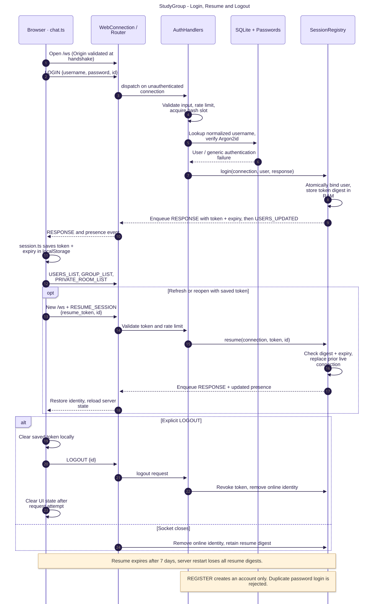
04-auth-session.mmdจากส่งข้อความถึงอ่านย้อนหลัง
ตรวจสิทธิ์และ commit ก่อน publish; request ID จับคู่ผล; message ID รวม ACK กับ sender echo
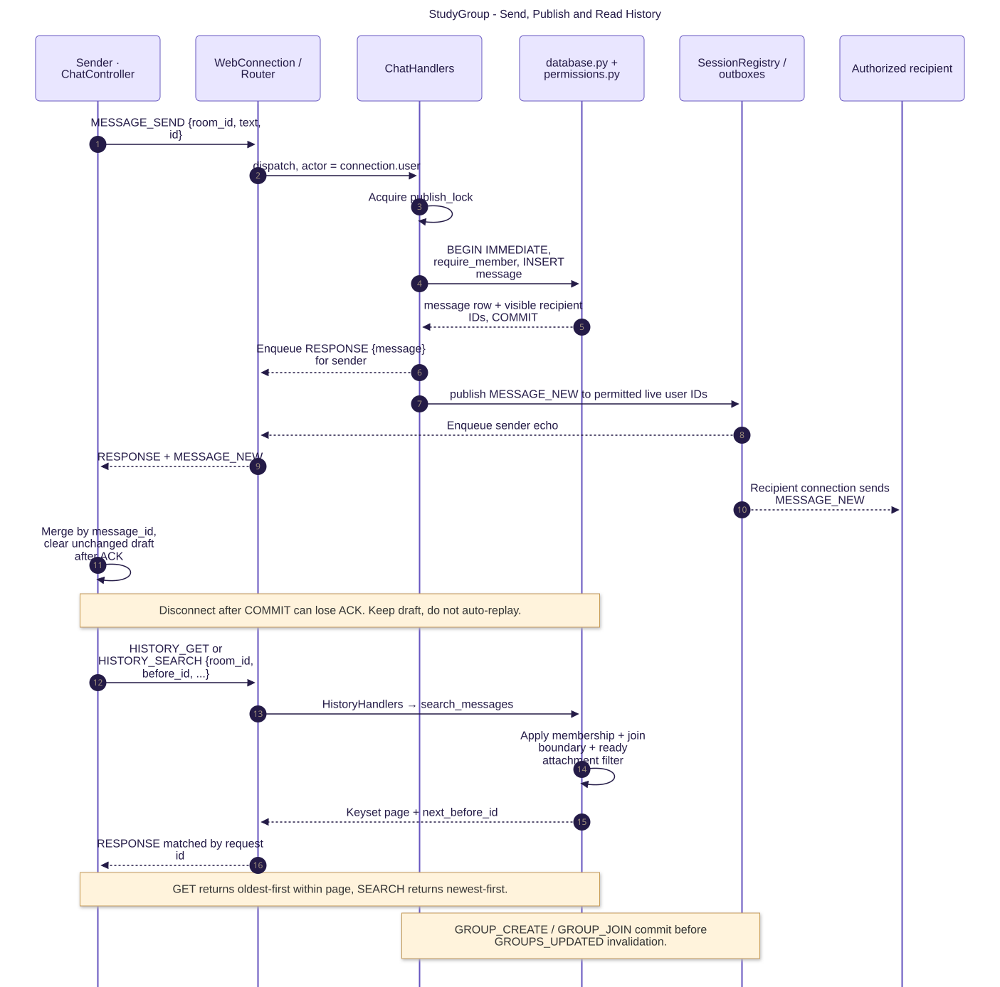
05-chat-history.mmdส่งไฟล์บน socket เดียวกับแชต
Base64 chunks ขนาด 32 KiB สำหรับ upload, SHA-256 ตรวจทั้งก้อน และ FILE_GET อ่านตาม offset
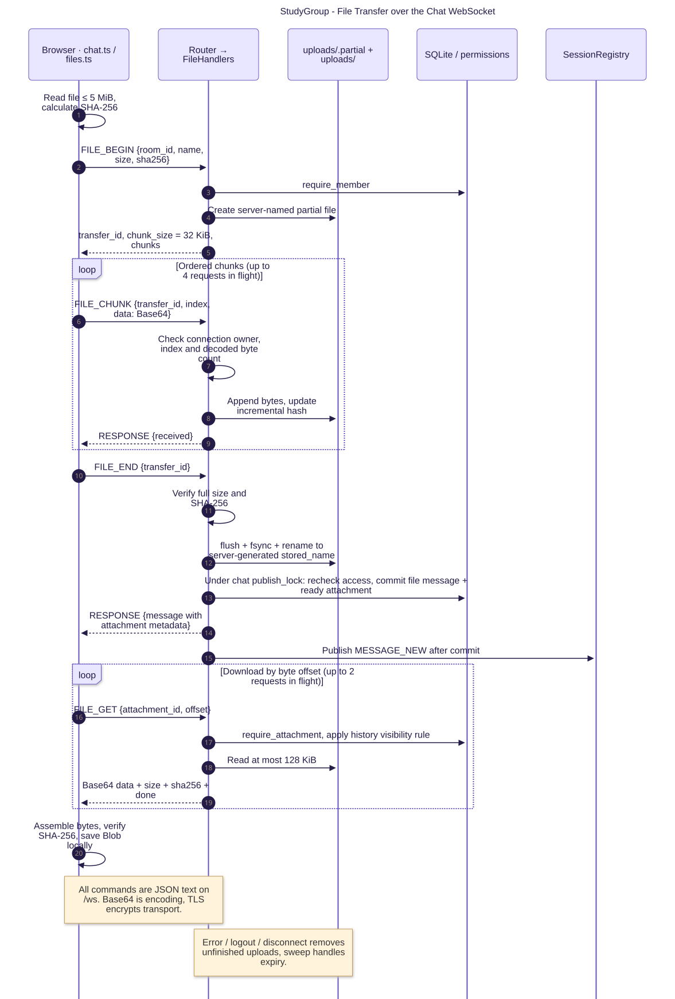
06-file-transfer.mmdคำขอสรุปกลุ่มไปถึง AI อย่างไร
เลือกเฉพาะข้อความที่ผู้ขอมีสิทธิ์เห็น ส่งงานไป worker แล้วตรวจสิทธิ์ซ้ำก่อนตอบเฉพาะผู้ขอ
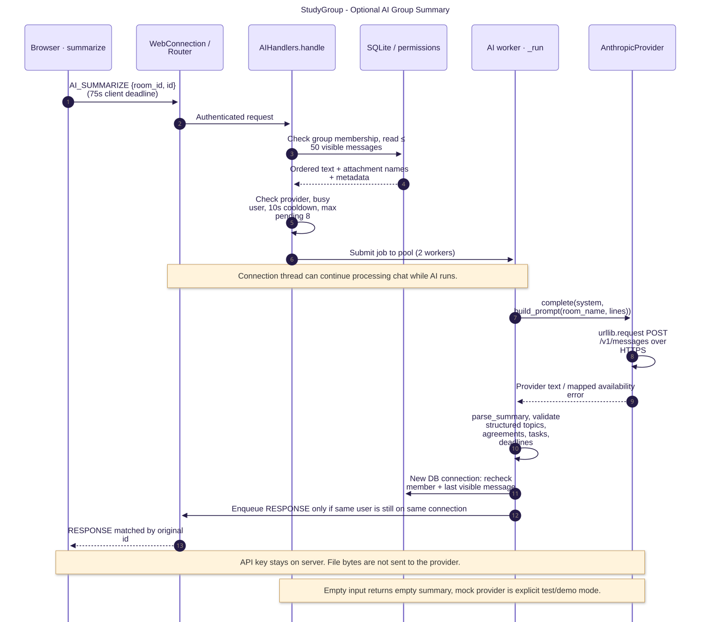
07-ai-summary.mmdความสัมพันธ์ของข้อมูลถาวร
ห้าตารางหลักและคอลัมน์สำคัญ; session, token digest, outbox และงานที่กำลังทำอยู่ใน memory
08-data-model.mmdเริ่มอ่านโค้ดจากตรงไหน
เริ่มที่ contract และหนึ่ง user action ตาม request ไปจนถึงสิทธิ์, storage, response, UI และชุดทดสอบ
09-reading-roadmap.mmdLocal, Vite และ Railway
Railway อ้างอิง topology ที่บันทึกเมื่อ 7 พ.ย. 2026 ไม่ใช่การตรวจระบบ live ใหม่; ข้อมูลถาวรอยู่ใน volume
10-deployment.mmd